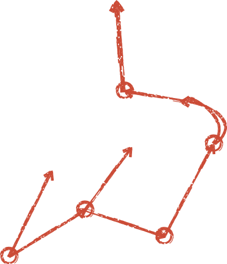
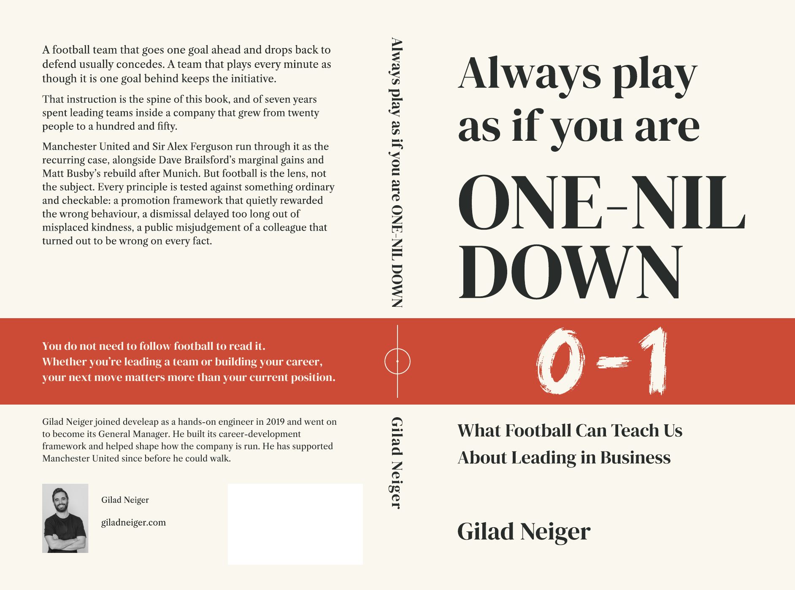
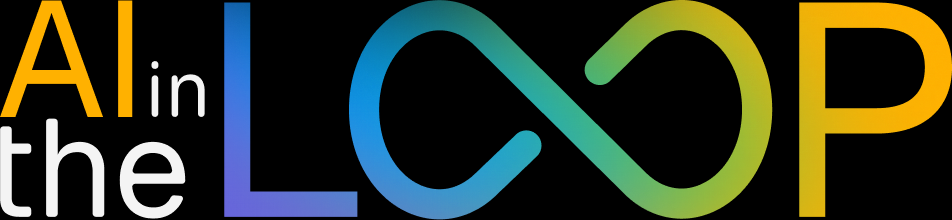
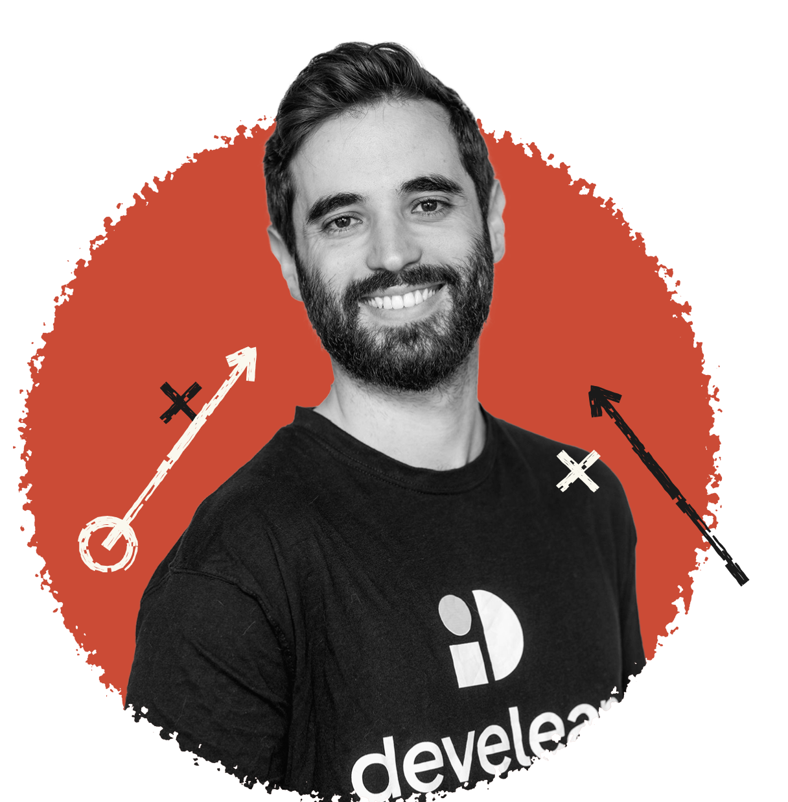
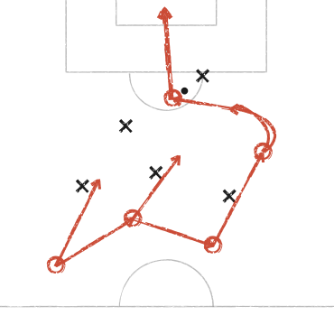

Always play as if you are one-nil down.
Winning is the most dangerous moment. I run a 150-person company and still think like the engineer who joined it. This is what the pitch taught me about leading.


Your next move matters more than your current position.
You do not need to follow football to read it. Whether you are leading a team or building your career, this is a book about the decisions that come next.
I test every principle against ordinary work: a promotion framework, a difficult conversation, a judgement I got wrong. Football is the lens. Leadership is the subject.
Available in paperback and ebook · English
A football team that goes one goal ahead and drops back to defend usually concedes.
A team that plays every minute as though it is one goal behind keeps the initiative.
Start with a chapter. Keep the ideas in play.
Get the first chapter of One-Nil Down, plus The Team Talk - a monthly newsletter on leadership, teams and growth through the lens of football.
Writing by Gilad.
Leadership, growth and AI. Articles I’ve written for develeap, beyond the pages of the book.
No posts in this selection. Try another topic.
AI in the Loop

AI moves fast.
Keep your perspective.
What changed in AI, why it matters, and what it means for the people putting it to work. A weekly newsletter by Gilad, from develeap.
- The developments worth your attention
- Real tools, real decisions
- A human view of the AI shift
Get the next edition. Every week, in Hebrew.
Hardware That Supervises,
Text That Commands.
Read the latest edition ↗
Still on
the pitch.
I joined develeap in 2019 as a hands-on DevOps engineer, when we were fewer than twenty people. Today I am its General Manager, leading a company of about 150.
I helped build our career-development framework.
I still build things myself. And I have supported Manchester United since before they could walk.
More about me
I am self-taught. I still build my own tools, including a kanji app and AI tooling. Football is my lens, not my subject. The questions I care about start with the people doing the work.
Let’s talk about
leading people.
Tell me about your event and the people in the room. I will get back to you by email.
gilad.neiger@develeap.com ↗